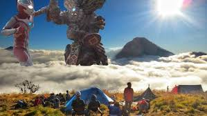

Bagi anda yg sedang liburan dan pusing liburan mau ngapain terutama bagi seorang santri,anda bisa mengajak keluarga anda untuk pergi traveling bersama ,kenapa harus keluarga?karna keluarga adalah hal yg paling melekat di dalam kehidupan kita,ajak lah keluarga anda untuk pergi bersama kesuatu tempat,mungkin bisa mendaki gunung bersama atau berjemur di pantai,atau bisa menjunguk saudara kita yg jauh dari rumah kita
Sebenarnya ini rekomendasi yg kedua,jika memang keluarga anda sangat-sangat sibuk ajaklah teman dekat anda,terserah anda mau,entah maen game atau pergi menjelajah hutan,intinya biar kamu tuh gk gabut lah,bisa juga ajak maen ke rumah,enaknya ajak maen ke gunung
Ini pilihan terakhir,kalo emang gk ada yg bisa di ajak maen,yo wes dolwn bae neng njero umah hehe
Iki beberapa website sing iso di hubungi yang awak dewe
Copyright © 2019 - Hulais Abdullah Waffa
Link Menuju Google